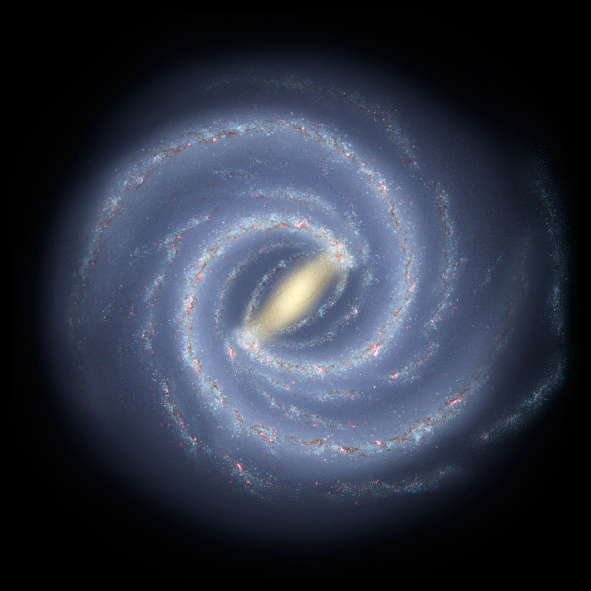

Blog
Explainers and notes
Interactive explainers and occasional notes on exoplanets, JWST and scientific machine learning.

Interactive explainer
Reading the air of other worlds
More than 6,000 planets are confirmed around other stars, and with JWST we can now study their air from hundreds of light-years away. An interactive introduction to transmission spectroscopy: how a dip in starlight turns into a chemical fingerprint of a distant atmosphere.